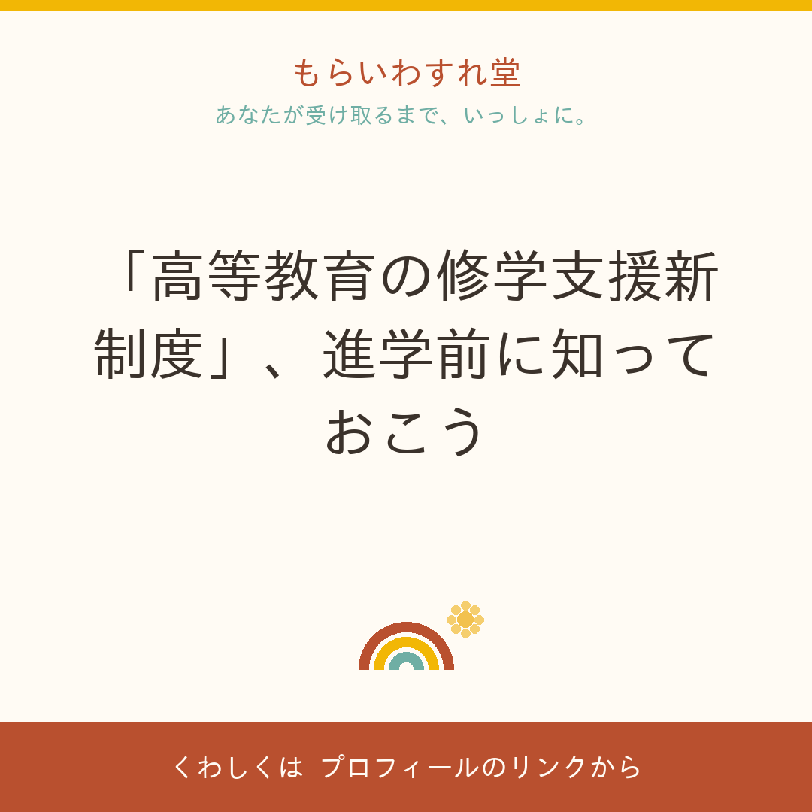
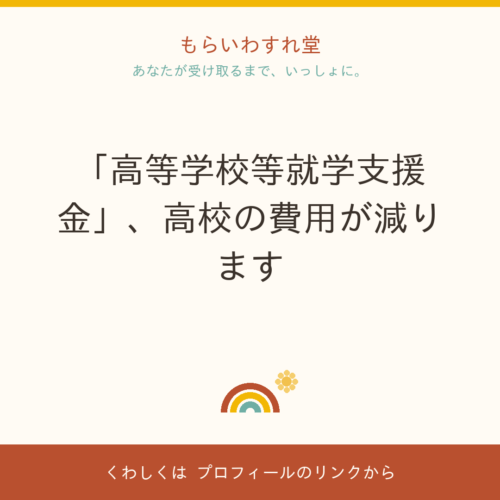
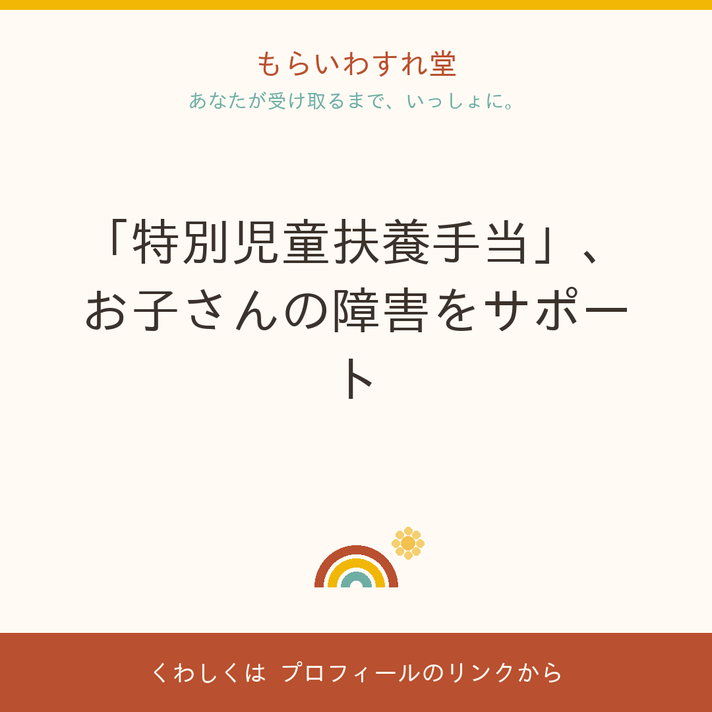
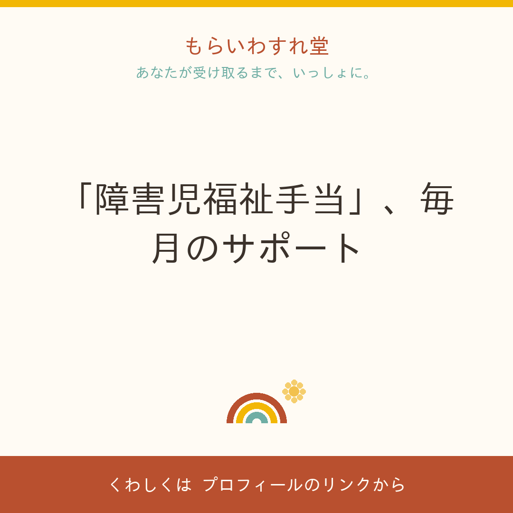
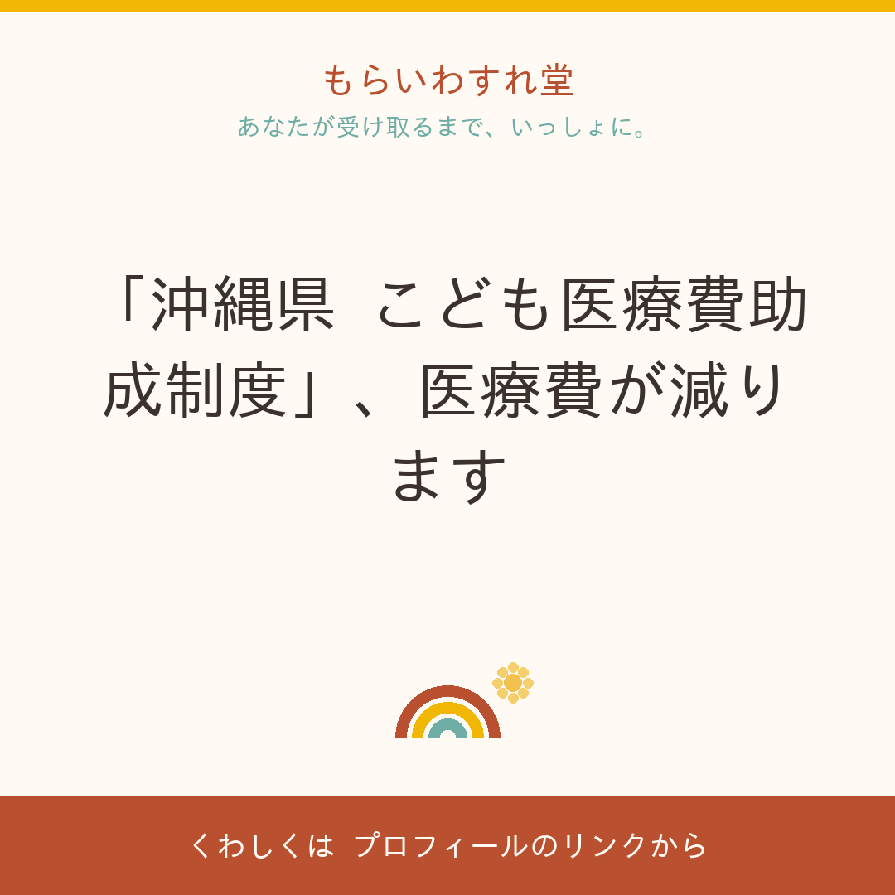

🌈 今週のIG投稿案(2026-W40)
更新: 2026-09-25 / 毎週月曜に自動更新 / このページは検索に載らない内部ページです
遥さんの3分ルーティン(投稿画像も完成品です)
① 画像を長押しで保存 → ② 「キャプションをコピー」→ ③ Instagramに投稿(画像+キャプション貼り付け)
④ 投稿したら、投稿案メールに返信で「案1 投稿した」と一言(使わない案は「案4 なし」)
※LINEはこちらから送る専用で、返信を受け取れません
⭐ 目安は週2本(火・金の20時ごろ)。⚠️の注意だけ守れば、どの案を選ぶかは遥さんにお任せです
🎨 画像やキャプションを直したいときは、そのままLINEで一言ください(次週から反映します)
案1
「高等教育の修学支援新制度」、進学前に知っておこう

🖼 画像はこのまま使えます: 長押し(PCは右クリック)→保存→Instagramへ
✅ 原文と照合ずみです(2026-08-06時点)ここに書いてある範囲は、こちらで公式ページと突き合わせています。改めて読み直さずに使っていただいて大丈夫です。
ただし「要確認」と書いてある項目だけは断定しないでください(制度はあるが、金額や条件までは詰め切れていない、という意味です)。
- 制度名
- 高等教育の修学支援新制度(授業料等減免・給付型奨学金)
- どこの制度か
- 文部科学省
- だれが対象か
- 大学・短大・高専・専門学校に進学する(在学中の)お子さんがいる世帯が対象となる可能性があります(2025年度から多子世帯の拡充があります)
- いくら
- 給付型奨学金(返還不要)と授業料・入学金の減免をセットで受けられる場合があります。世帯年収の目安は約600万円まで、令和7年度からは扶養する子3人以上の多子世帯は所得制限なく減免の対象になる場合があります(要確認)
- どこへ申し込むか
- 在学校・進学先を通じた申込み(日本学生支援機構)
- いつまで
- 常時
大学・短大・高専・専門学校への進学を考えている方へ。「高等教育の修学支援新制度」は、給付型奨学金(返還不要)と授業料・入学金の減免をセットで受けられる制度です。対象になる可能性があります。令和7年度からは、3人以上のお子さんがいるご家庭の所得制限が緩和される場合があります。進学先の学校で相談できます。「うちは対象かな?」と思ったら、まず公式ページを見てみてください。
#もらいわすれ堂 #沖縄 #教育 #給付金 #修学支援
⚠️ 投稿前の注意: 金額・期限・対象条件は本文に書かない。「対象になる可能性があります」の言い方を崩さない。制度ID fk-kuni-shugaku-shien
出典: 公式ページを開く
案2
「高等学校等就学支援金」、高校の費用が減ります

🖼 画像はこのまま使えます: 長押し(PCは右クリック)→保存→Instagramへ
✅ 原文と照合ずみです(2026-09-25時点)ここに書いてある範囲は、こちらで公式ページと突き合わせています。改めて読み直さずに使っていただいて大丈夫です。
ただし「要確認」と書いてある項目だけは断定しないでください(制度はあるが、金額や条件までは詰め切れていない、という意味です)。
- 制度名
- 高等学校等就学支援金
- どこの制度か
- 文部科学省
- だれが対象か
- 高校生のいるご家庭が対象となる可能性があります
- いくら
- 要確認(公式ページでご確認ください)
- どこへ申し込むか
- 在学している高校で申請
- いつまで
- 常時
高校生のいるご家庭に知ってほしい制度です。「高等学校等就学支援金」。授業料負担を軽くするための支援です。一定の収入未満の世帯が対象になることがあります。在学している高校で申請できます。金額や細かい条件は年度で変わることがあるので、このページでご確認ください。「うちは対象かな?」と思ったら、まず学校か公式ページでご確認ください。
#もらいわすれ堂 #沖縄 #教育 #高校 #就学支援
⚠️ 投稿前の注意: 金額・期限・対象条件は本文に書かない。「対象になることがあります」の言い方を崩さない。制度ID fk-kuni-shotoku-shien
出典: 公式ページを開く
案3
「特別児童扶養手当」、お子さんの障害をサポート

🖼 画像はこのまま使えます: 長押し(PCは右クリック)→保存→Instagramへ
✅ 原文と照合ずみです(2026-09-25時点)ここに書いてある範囲は、こちらで公式ページと突き合わせています。改めて読み直さずに使っていただいて大丈夫です。
ただし「要確認」と書いてある項目だけは断定しないでください(制度はあるが、金額や条件までは詰め切れていない、という意味です)。
- 制度名
- 特別児童扶養手当
- どこの制度か
- 厚生労働省
- だれが対象か
- 一定の障害状態にあるお子さんを育てている方が対象となる可能性があります
- いくら
- 要確認(公式ページでご確認ください)
- どこへ申し込むか
- お住まいの市区町村の窓口
- いつまで
- 常時
障害のあるお子さんを育てているご家庭に、支援があります。「特別児童扶養手当」。一定の障害状態にあるお子さんを育てている方が対象になることがあります。申し込みの窓口はお住まいの市区町村の窓口。金額や細かい条件は年度で変わることがあるので、このページでご確認ください。「うちは対象かな?」と思ったら、まず公式ページを見てみてください。
#もらいわすれ堂 #沖縄 #子育て #障害児 #特別児童扶養手当
⚠️ 投稿前の注意: 金額・期限・対象条件は本文に書かない。「対象になることがあります」の言い方を崩さない。制度ID fk-kuni-shogaiji-kyufu
出典: 公式ページを開く
案4
「障害児福祉手当」、毎月のサポート

🖼 画像はこのまま使えます: 長押し(PCは右クリック)→保存→Instagramへ
✅ 原文と照合ずみです(2026-09-25時点)ここに書いてある範囲は、こちらで公式ページと突き合わせています。改めて読み直さずに使っていただいて大丈夫です。
ただし「要確認」と書いてある項目だけは断定しないでください(制度はあるが、金額や条件までは詰め切れていない、という意味です)。
- 制度名
- 障害児福祉手当
- どこの制度か
- 厚生労働省
- だれが対象か
- 在宅で一定の障害状態にあるお子さんのケアをしている世帯が対象となる可能性があります
- いくら
- 要確認(公式ページでご確認ください)
- どこへ申し込むか
- お住まいの市区町村の窓口
- いつまで
- 常時
在宅で障害児のケアをしているご家庭へ。「障害児福祉手当」は、一定の障害状態にあるお子さんを育てている世帯が対象になることがあります。申し込みの窓口はお住まいの市区町村の窓口。手当の金額は月単位で支給されます。金額や細かい条件は年度で変わることがあるので、このページでご確認ください。「うちは対象かな?」と思ったら、まず公式ページを見てみてください。
#もらいわすれ堂 #沖縄 #障害児 #福祉 #生活支援
⚠️ 投稿前の注意: 金額・期限・対象条件は本文に書かない。「対象になることがあります」の言い方を崩さない。制度ID fk-kuni-syogaisya-teate
出典: 公式ページを開く
案5
「沖縄県 こども医療費助成制度」、医療費が減ります

🖼 画像はこのまま使えます: 長押し(PCは右クリック)→保存→Instagramへ
✅ 原文と照合ずみです(2026-09-25時点)ここに書いてある範囲は、こちらで公式ページと突き合わせています。改めて読み直さずに使っていただいて大丈夫です。
ただし「要確認」と書いてある項目だけは断定しないでください(制度はあるが、金額や条件までは詰め切れていない、という意味です)。
- 制度名
- 沖縄県 こども医療費助成制度
- どこの制度か
- 沖縄県(市町村)
- だれが対象か
- 沖縄県内のお子さんがいるご家庭が対象となる可能性があります
- いくら
- 対象年齢や補助内容は市町村で異なります。要確認(公式ページでご確認ください)
- どこへ申し込むか
- お住まいの市町村の福祉窓口
- いつまで
- 常時
沖縄県内のお子さんがいるご家庭に朗報です。「沖縄県 こども医療費助成制度」。お子さんの医療費の一部または全部を補助する制度です。対象年齢や補助内容はお住まいの市町村で異なるので、詳しくはお住まいの市町村の福祉窓口でご確認ください。金額や細かい条件は年度で変わることがあるので、このページでご確認ください。「うちは対象かな?」と思ったら、まず市町村窓口か公式ページを見てみてください。
#もらいわすれ堂 #沖縄 #医療費 #子育て #こども医療費助成
⚠️ 投稿前の注意: 金額・期限・対象条件は本文に書かない。「対象になる可能性があります」の言い方を崩さない。制度ID fk-okinawa-kokoro-iryo。市町村の個別制度との併給・重複を確認させる言い方が重要。
出典: 公式ページを開く
投稿の最終判断は遥さん・小柳さんにお任せします(ここは提案まで)。文面の相談はチャットへいつでもどうぞ。